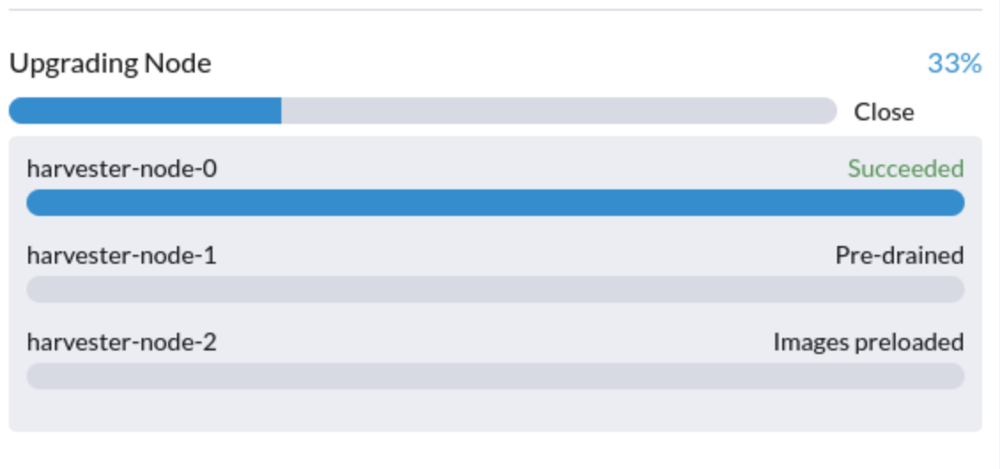
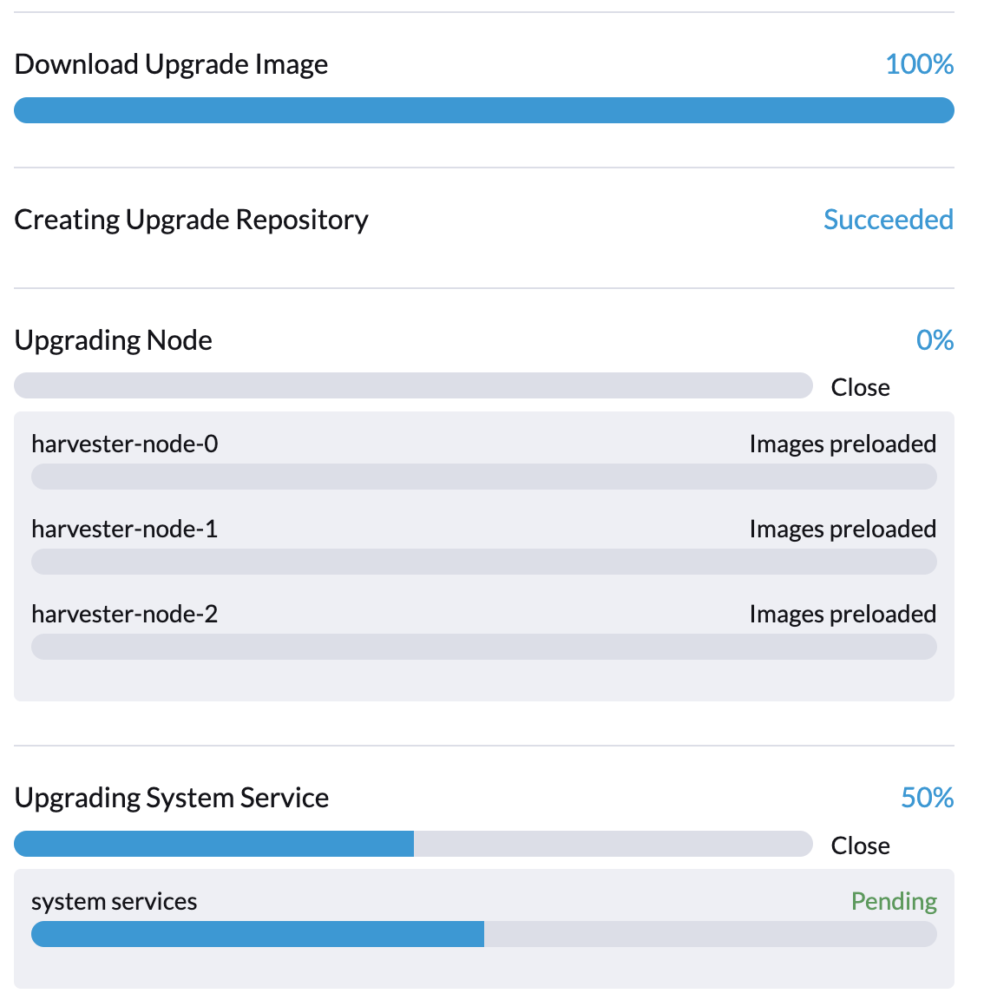

|
本文档采用自动化机器翻译技术翻译。 尽管我们力求提供准确的译文，但不对翻译内容的完整性、准确性或可靠性作出任何保证。 若出现任何内容不一致情况，请以原始 英文 版本为准，且原始英文版本为权威文本。 |
从 v1.1.2 升级到 v1.2.0（不推荐）
|
由于在 v1.2.0 中发现的已知问题： 我们不推荐升级到 v1.2.0。请将您的 v1.1.x 集群升级到 v1.2.1。 |
已知问题
1.升级无法开始并报告 "validator.harvesterhci.io" denied the request: managed chart rancher-monitoring is not ready, please wait for it to be ready
如果集群配置了 存储网络，则升级无法开始，并显示以下消息。

2.升级卡在 Creating Upgrade Repository
在升级过程中，创建升级存储库 卡在 待处理 状态：

请执行以下步骤检查集群是否遇到问题：
-
检查升级储存库 pod：

如果
virt-launcher-upgrade-repo-hvst-<upgrade-name>pod 保持在ContainerCreating，您的集群可能遇到了此问题。在这种情况下，请继续执行步骤 2。 -
检查 Longhorn GUI 中的升级储存库卷。
-
导航到 卷 页面。
-
检查升级储存库虚拟机卷。它应该附加到名为
virt-launcher-upgrade-repo-hvst-<upgrade-name>的 Pod。如果其中一个卷的副本保持在Stopped（灰色），则集群遇到了问题。
-
相关问题：
-
解决方法：
-
从 Longhorn GUI 中删除
Stopped副本。或者
-
3.当节点预排空时，升级卡住。
从 v1.1.0 开始，Harvester 将等待所有卷变为健康（当节点数量 >= 3）后再升级节点。通常，如果升级卡在 "预排空" 状态，可以检查卷的健康状况。
访问 "访问嵌入式 Longhorn" 以查看如何访问嵌入式 Longhorn GUI。
您还可以检查预排空作业日志。请参阅第 4 阶段：在故障排除指南中升级节点。

5.升级卡在预排空状态
您可能会看到升级卡在 "预排空" 状态：

在这个阶段，Kubernetes 应该排空节点上的工作负载，但某些原因可能导致该过程停滞。
5.1 节点包含一个 Longhorn instance-manager-r pod，服务于单副本卷
如果节点包含卷的最后一个存活副本，Longhorn 不允许排空该节点。要检查节点是否遇到这种情况，请按照以下步骤操作：
-
使用以下命令列出单副本卷：
kubectl get volumes.longhorn.io -A -o yaml | yq '.items[] | select(.spec.numberOfReplicas == 1) | .metadata.namespace + "/" + .metadata.name'
例如：
$ kubectl get volumes.longhorn.io -A -o yaml | yq '.items[] | select(.spec.numberOfReplicas == 1) | .metadata.namespace + "/" + .metadata.name' longhorn-system/pvc-d1f19bab-200e-483b-b348-c87cfbba85ab
-
检查副本是否位于卡住的节点上：
使用以下命令列出卷副本的 NodeID：
kubectl get replicas.longhorn.io -n longhorn-system -o yaml | yq '.items[] | select(.metadata.labels.longhornvolume == "<volume>") | .spec.nodeID'
例如：
$ kubectl get replicas.longhorn.io -n longhorn-system -o yaml | yq '.items[] | select(.metadata.labels.longhornvolume == "pvc-d1f19bab-200e-483b-b348-c87cfbba85ab") | .spec.nodeID' node1
如果结果显示副本位于升级卡住的节点上（在此示例中为 node1），您的集群正遇到此问题。
有几种方法可以解决这种情况。选择最适合您虚拟机的方法：
-
关闭使用单副本卷的虚拟机以分离卷，从而允许升级继续。
-
将卷的副本调整为多于一个。
-
前往*卷* 页面。
-
找到有问题的卷，点击右侧的图标，然后选择 更新副本数量：

-
增加 副本数量 并选择 确定。
5.2 配置错误的 Longhorn instance-manager-r Pod 中断预算 (PDB)
配置错误的 PDB 可能导致此问题。要检查是否是这种情况，请执行以下步骤：
-
假设卡住的节点是
harvester-node-1。 -
检查卡住节点上的
instance-manager-e或instance-manager-rpod 名称：$ kubectl get pods -n longhorn-system --field-selector spec.nodeName=harvester-node-1 | grep instance-manager instance-manager-r-d4ed2788 1/1 Running 0 3d8h
上面的输出显示
instance-manager-r-d4ed2788pod 在该节点上。 -
检查 Rancher 日志并验证
instance-manager-e或instance-manager-rpod 是否无法排空：$ kubectl logs deployment/rancher -n cattle-system ... 2023-03-28T17:10:52.199575910Z 2023/03/28 17:10:52 [INFO] [planner] rkecluster fleet-local/local: waiting: draining etcd node(s) custom-4f8cb698b24a,custom-a0f714579def 2023-03-28T17:10:55.034453029Z evicting pod longhorn-system/instance-manager-r-d4ed2788 2023-03-28T17:10:55.080933607Z error when evicting pods/"instance-manager-r-d4ed2788" -n "longhorn-system" (will retry after 5s): Cannot evict pod as it would violate the pod's disruption budget.
-
运行命令检查是否有与卡住节点关联的 PDB：
$ kubectl get pdb -n longhorn-system -o yaml | yq '.items[] | select(.spec.selector.matchLabels."longhorn.io/node"=="harvester-node-1") | .metadata.name' instance-manager-r-466e3c7f
-
检查此 PDB 的实例管理器的所有者：
$ kubectl get instancemanager instance-manager-r-466e3c7f -n longhorn-system -o yaml | yq -e '.spec.nodeID' harvester-node-2
如果输出与卡住节点不匹配（在此示例输出中，
harvester-node-2与卡住节点harvester-node-1不匹配），那么我们可以得出这个问题发生的结论。 -
在应用解决方法之前，检查所有卷是否健康：
kubectl get volumes -n longhorn-system -o yaml | yq '.items[] | select(.status.state == "attached")| .status.robustness'
输出应全部为
healthy。如果不是这种情况，您可能需要解除节点的封锁以使卷再次健康。 -
删除配置错误的 PDB：
kubectl delete pdb instance-manager-r-466e3c7f -n longhorn-system
5.3 instance-manager-e pod 无法排空
在升级过程中，您可能会遇到无法排空 instance-manager-e pod 的问题。当这种情况发生时，您将在 Rancher 日志中看到如下错误消息：
$ kubectl logs deployment/rancher -n cattle-system | grep "evicting pod" evicting pod longhorn-system/instance-manager-r-a06a43f3437ab4f643eea7053b915a80 evicting pod longhorn-system/instance-manager-e-452e87d2 error when evicting pods/"instance-manager-r-a06a43f3437ab4f643eea7053b915a80" -n "Longhorn-system" (will retry after 5s): Cannot evict pod as it would violate the pod's disruption budget. error when evicting pods/"instance-manager-e-452e87d2" -n "longhorn-system" (will retry after 5s): Cannot evict pod as it would violate the pod's disruption budget.
检查 instance-manager-e 以查看是否还有任何引擎实例。
$ kubectl get instancemanager instance-manager-e-452e87d2 -n longhorn-system -o yaml | yq -e ".status.instances"
pvc-7b120d60-1577-4716-be5a-62348271025a-e-1cd53c57:
spec:
name: pvc-7b120d60-1577-4716-be5a-62348271025a-e-1cd53c57
status:
endpoint: ""
errorMsg: ""
listen: ""
portEnd: 10001
portStart: 10001
resourceVersion: 0
state: running
type: ""
在此示例中，instance-manager-e-452e87d2 仍然有一个引擎实例，因此您无法排空 pod。
您需要检查引擎编号以查看是否有任何引擎编号是多余的。每个 PVC 应该只有一个引擎。
# kubectl get engines -n longhorn-system -l longhornvolume=pvc-7b120d60-1577-4716-be5a-62348271025a NAME STATE NODE INSTANCEMANAGER IMAGE AGE pvc-76120d60-1577-4716-be5a-62348271025a-e-08220662 running harvester-qv4hd instance-manager-e-625d715e2f2e7065d64339f9b31407c2 longhornio/longhorn-engine:v1.4.3 2d12h pvc-7b120d60-1577-4716-be5a-62348271025a-e-lcd53c57 running harvester-lhlkv instance-manager-e-452e87d2 longhornio/longhorn-engine:v1.4.3 4d10h
上面的例子显示同一个PVC存在两个引擎，这是Longhorn中的一个已知问题 #6642。为了解决这个问题，请删除冗余的引擎，以便继续升级。
要确定哪个引擎是正确的，请使用以下命令：
$ kubectl get volumes pvc-7b120d60-1577-4716-be5a-62348271025a -n longhorn-system NAME STATE ROBUSTNESS SCHEDULED SIZE NODE AGE pvc-7b120d60-1577-4716-be5a-62348271025a attached healthy 42949672960 harvester-q4vhd 4d10h
在这个例子中，卷`pvc-7b120d60-1577-4716-be5a-62348271025a`在节点`harvester-q4vhd`上处于活动状态，这表明未在该节点上运行的引擎是冗余的。
要使引擎变为非活动状态并触发Longhorn的自动删除，请运行以下命令：
$ kubectl patch engine pvc-7b120d60-1577-4716-be5a-62348271025a-e-lcd53c57 -n longhorn-system --type='json' -p='[{"op": "replace", "path": "/spec/active", "value": false}]'
engine.longhorn.io/pvc-7b120d60-1577-4716-be5a-62348271025a-e-lcd53c57 patched
几秒钟后，您可以验证引擎的状态：
$ kubectl get engine -n longhorn-system|grep pvc-7b120d60-1577-4716-be5a-62348271025a pvc-7b120d60-1577-4716-be5a-62348271025a-e-08220b62 running harvester-q4vhd instance-manager-e-625d715e2f2e7065d64339f9631407c2 longhornio/longhorn-engine:v1.4.3 2d13h
instance-manager-e pod 现在应该成功排空，从而允许升级进行。
6.升级卡在升级系统服务状态中。
如果您注意到升级在*升级系统服务*状态下停留了很长时间，您可能需要调查升级是否在`apply-manifests`阶段卡住。

POD prometheus-rancher-monitoring-prometheus-0 将被删除。
-
检查`apply-manifests` pod的日志，查看以下消息是否重复。
$ kubectl -n harvester-system logs hvst-upgrade-md6wr-apply-manifests-wqslg --tail=10 Tue Sep 5 10:20:39 UTC 2023 there are still 1 pods in cattle-monitoring-system to be deleted Tue Sep 5 10:20:45 UTC 2023 there are still 1 pods in cattle-monitoring-system to be deleted Tue Sep 5 10:20:50 UTC 2023 there are still 1 pods in cattle-monitoring-system to be deleted Tue Sep 5 10:20:55 UTC 2023 there are still 1 pods in cattle-monitoring-system to be deleted Tue Sep 5 10:21:00 UTC 2023 there are still 1 pods in cattle-monitoring-system to be deleted
-
检查`prometheus-rancher-monitoring-prometheus-0` pod是否卡在状态`Terminating`。
$ kubectl -n cattle-monitoring-system get pods NAME READY STATUS RESTARTS AGE prometheus-rancher-monitoring-prometheus-0 0/3 Terminating 0 19d
-
使用以下命令查找终止pod的UID：
$ kubectl -n cattle-monitoring-system get pod prometheus-rancher-monitoring-prometheus-0 -o jsonpath='{.metadata.uid}' 33f43165-6faa-4648-927d-69097901471c -
通过控制台或SSH访问集群的任何节点。
-
使用pod的UID在`/var/lib/rancher/rke2/agent/logs/kubelet.log`中搜索相关的日志消息。
E0905 10:26:18.769199 17399 reconciler.go:208] "operationExecutor.UnmountVolume failed (controllerAttachDetachEnabled true) for volume \"pvc-7781c988-c35b-4cf8-89e6-f2907ef33603\" (UniqueName: \"kubernetes.io/csi/driver.longhorn.io^pvc-7781c988-c35b-4cf8-89e6-f2907ef33603\") pod \"33f43165-6faa-4648-927d-69097901471c\" (UID: \"33f43165-6faa-4648-927d-69097901471c\") : UnmountVolume.NewUnmounter failed for volume \"pvc-7781c988-c35b-4cf8-89e6-f2907ef33603\" (UniqueName: \"kubernetes.io/csi/driver.longhorn.io^pvc-7781c988-c35b-4cf8-89e6-f2907ef33603\") pod \"33f43165-6faa-4648-927d-69097901471c\" (UID: \"33f43165-6faa-4648-927d-69097901471c\") : kubernetes.io/csi: unmounter failed to load volume data file [/var/lib/kubelet/pods/33f43165-6faa-4648-927d-69097901471c/volumes/kubernetes.io~csi/pvc-7781c988-c35b-4cf8-89e6-f2907ef33603/mount]: kubernetes.io/csi: failed to open volume data file [/var/lib/kubelet/pods/33f43165-6faa-4648-927d-69097901471c/volumes/kubernetes.io~csi/pvc-7781c988-c35b-4cf8-89e6-f2907ef33603/vol_data.json]: open /var/lib/kubelet/pods/33f43165-6faa-4648-927d-69097901471c/volumes/kubernetes.io~csi/pvc-7781c988-c35b-4cf8-89e6-f2907ef33603/vol_data.json: no such file or directory" err="UnmountVolume.NewUnmounter failed for volume \"pvc-7781c988-c35b-4cf8-89e6-f2907ef33603\" (UniqueName: \"kubernetes.io/csi/driver.longhorn.io^pvc-7781c988-c35b-4cf8-89e6-f2907ef33603\") pod \"33f43165-6faa-4648-927d-69097901471c\" (UID: \"33f43165-6faa-4648-927d-69097901471c\") : kubernetes.io/csi: unmounter failed to load volume data file [/var/lib/kubelet/pods/33f43165-6faa-4648-927d-69097901471c/volumes/kubernetes.io~csi/pvc-7781c988-c35b-4cf8-89e6-f2907ef33603/mount]: kubernetes.io/csi: failed to open volume data file [/var/lib/kubelet/pods/33f43165-6faa-4648-927d-69097901471c/volumes/kubernetes.io~csi/pvc-7781c988-c35b-4cf8-89e6-f2907ef33603/vol_data.json]: open /var/lib/kubelet/pods/33f43165-6faa-4648-927d-69097901471c/volumes/kubernetes.io~csi/pvc-7781c988-c35b-4cf8-89e6-f2907ef33603/vol_data.json: no such file or directory"
如果kubelet继续抱怨卷无法卸载，请应用以下解决方法以允许升级进行。
-
使用以下命令强制删除卡在状态`Terminating`的pod：
kubectl delete pod prometheus-rancher-monitoring-prometheus-0 -n cattle-monitoring-system --force
在cattle-monitoring-system名称空间中将删除多个POD。
-
检查`apply-manifests` pod的日志，查看以下消息是否重复。
there are still 10 pods in cattle-monitoring-system to be deleted Fri Dec 8 19:06:56 UTC 2023 there are still 10 pods in cattle-monitoring-system to be deleted Fri Dec 8 19:07:01 UTC 2023
当它继续显示10个（或其他数字）POD时，会遇到以下问题。
The monitoring feature is deployed from the rancher-monitoring ManagedChart, in Harvester v1.2.0,v1.2.1, this ManagedChart is converted to Harvester Addon feature when upgrading. The ManagedChart rancher-monitoring is deleted, normally, all the generated resources including deployment, daemonset etc. will be deleted automatically. But in this case, those resources are not deleted. The above log reflects the result. Following instructions will guide to delete them manually.
-
在`cattle-monitoring-system`名称空间中定位受影响的资源。
Root level resources in cattle-monitoring-system Customized CRD: Prometheus Object: rancher-monitoring-prometheus Sub-object: statefulset.apps/prometheus-rancher-monitoring-prometheus Customized CRD: Alertmanager object: rancher-monitoring-alertmanager Sub-object: statefulset.apps/alertmanager-rancher-monitoring-alertmanager Deployment: rancher-monitoring-grafana rancher-monitoring-kube-state-metrics rancher-monitoring-operator rancher-monitoring-prometheus-adapter Daemonset: rancher-monitoring-prometheus-node-exporter
-
删除受影响的资源。
Use below commands to delete them, meanwhile check the log of the `apply-manifests` until it does not report `there are still x pods in cattle-monitoring-system to be deleted`. kubectl delete prometheus rancher-monitoring-prometheus -n cattle-monitoring-system kubectl delete alertmanager rancher-monitoring-alertmanager -n cattle-monitoring-system kubectl delete deployment rancher-monitoring-grafana -n cattle-monitoring-system kubectl delete deployment rancher-monitoring-kube-state-metrics -n cattle-monitoring-system kubectl delete deployment rancher-monitoring-operator -n cattle-monitoring-system kubectl delete deployment rancher-monitoring-prometheus-adapter -n cattle-monitoring-system kubectl delete daemonset rancher-monitoring-prometheus-node-exporter -n cattle-monitoring-system
您可能需要多次运行某些命令以完全删除资源。
-
相关问题
7.升级卡在`Upgrading System Service`状态中。
如果升级在`Upgrading System Service`状态中停留较长时间，某些系统服务的证书可能已过期。要调查和解决此问题，请按照以下步骤操作：
-
使用以下命令查找`apply-manifest`作业的名称：
kubectl get jobs -n harvester-system -l harvesterhci.io/upgradeComponent=manifest
示例输出：
NAME COMPLETIONS DURATION AGE hvst-upgrade-9gmg2-apply-manifests 0/1 46s 46s
-
使用以下命令检查作业的日志：
kubectl logs jobs/hvst-upgrade-9gmg2-apply-manifests -n harvester-system
如果日志中出现以下消息，请继续下一步：
Waiting for CAPI cluster fleet-local/local to be provisioned (current phase: Provisioning, current generation: 30259)... Waiting for CAPI cluster fleet-local/local to be provisioned (current phase: Provisioning, current generation: 30259)... Waiting for CAPI cluster fleet-local/local to be provisioned (current phase: Provisioning, current generation: 30259)... Waiting for CAPI cluster fleet-local/local to be provisioned (current phase: Provisioning, current generation: 30259)...
-
使用以下命令检查CAPI集群的状态：
kubectl get clusters.provisioning.cattle.io local -n fleet-local -o yaml
如果您看到类似于以下的条件，集群可能遇到了问题：
- lastUpdateTime: "2023-01-17T16:26:48Z" message: 'configuring bootstrap node(s) custom-24cb32ce8387: waiting for probes: kube-controller-manager, kube-scheduler' reason: Waiting status: Unknown type: Updated -
使用以下命令查找机器的主机名，并按照 解决方法查看节点上的服务证书是否过期：
kubectl get machines.cluster.x-k8s.io -n fleet-local <machine_name> -o yaml | yq .status.nodeRef.name
用上一步输出中的机器名称替换`<machine_name>`。
如果多个节点在同一时间加入集群，您应该在所有这些节点上执行 解决方法。
8.在隔离的环境中，registry.suse.com/harvester-beta/vmdp:latest 镜像不可用。
截至v1.1.0，Harvester未将`registry.suse.com/harvester-beta/vmdp:latest`镜像打包到.iso 映像中。在 v1.1.0 之前的 Windows 虚拟机使用此映像作为容器磁盘。然而，kubelet 可能会删除旧映像以释放空间。当此映像被删除时，Windows 虚拟机无法访问隔离的环境。您可以通过将映像更改为 registry.suse.com/suse/vmdp/vmdp:2.5.4.2 并重启 Windows 虚拟机来解决此问题。
9.升级卡在后排空状态。
|
此已知问题在 v1.2.1 中已修复。 |
如果您遇到 后排空 状态，节点可能会卡在操作系统升级过程中，如下所示。

Harvester 使用 elemental upgrade 来帮助我们升级操作系统。检查 elemental upgrade 日志以查看是否有任何错误。
您可以使用以下命令检查 elemental upgrade 日志：
# View the post-drain job, which should be named `hvst-upgrade-xxx-post-drain-xxx`
$ kubectl get pod --selector=harvesterhci.io/upgradeJobType=post-drain -n harvester-system
# Check the logs with the following command
$ kubectl logs -n harvester-system pods/hvst-upgrade-xxx-post-drain-xxx假设您在日志中看到以下错误。不完整的 state.yaml 导致此问题。
Flag --directory has been deprecated, 'directory' is deprecated please use 'system' instead
INFO[2023-09-13T12:02:42Z] Starting elemental version 0.3.1
INFO[2023-09-13T12:02:42Z] reading configuration form '/tmp/tmp.N6rn4F6mKM'
ERRO[2023-09-13T12:02:42Z] Invalid upgrade command setup undefined state partition
elemental upgrade failed with return code: 33
+ ret=33
+ '[' 33 '!=' 0 ']'
+ echo 'elemental upgrade failed with return code: 33'
+ cat /host/usr/local/upgrade_tmp/elemental-upgrade-20230913120242.log在这种情况下，Harvester 将 elemental-cli 升级到最新版本。它将尝试从 state 中查找 state.yaml 分区。如果 state.yaml 不完整，则可能无法找到 state 分区。
不完整的 state.yaml 将如下所示。
# Autogenerated file by elemental client, do not edit
date: "2023-09-13T08:31:42Z"
state:
# we are missing `label` here.
active:
source: dir:///tmp/tmp.01deNrXNEC
label: COS_ACTIVE
fs: ext2
passive: null删除此不完整的 state.yaml 文件以解决此问题。（后排空将每 10 分钟重试一次）。
-
重新挂载
state分区为读写。$ mount -o remount,rw /run/initramfs/cos-state -
去除
state.yaml。$ rm -f /run/initramfs/cos-state/state.yaml -
将
state分区重新挂载为只读。$ mount -o remount,ro /run/initramfs/cos-state
在执行上述步骤后，您应该在下次重试时通过后排空。
10.由于 fleet-agent 中的 customer provided SSL certificate without IP SAN 错误，升级卡在升级系统服务状态。
|
此已知问题在 v1.2.1 中已修复。 |
如果升级在 升级系统服务 状态下卡住很长时间，请按照以下步骤调查此问题：
-
查找与升级相关的 pod：
kubectl get pods -A | grep upgrade
示例输出：
# kubectl get pods -A | grep upgrade cattle-system system-upgrade-controller-5685d568ff-tkvxb 1/1 Running 0 85m harvester-system hvst-upgrade-vq4hl-apply-manifests-65vv8 1/1 Running 0 87m // waiting for managedchart to be ready ..
-
pod
hvst-upgrade-vq4hl-apply-manifests-65vv8有以下循环日志：Current version: 102.0.0+up40.1.2, Current state: WaitApplied, Current generation: 23 Sleep for 5 seconds to retry
-
检查所有包的状态。请注意，有几个包是
OutOfSync：# kubectl get bundle -A NAMESPACE NAME BUNDLEDEPLOYMENTS-READY STATUS ... fleet-local mcc-local-managed-system-upgrade-controller 1/1 fleet-local mcc-rancher-logging 0/1 OutOfSync(1) [Cluster fleet-local/local] fleet-local mcc-rancher-logging-crd 0/1 OutOfSync(1) [Cluster fleet-local/local] fleet-local mcc-rancher-monitoring 0/1 OutOfSync(1) [Cluster fleet-local/local] fleet-local mcc-rancher-monitoring-crd 0/1 WaitApplied(1) [Cluster fleet-local/local]
-
pod
fleet-agent-*有以下错误日志：fleet-agent pod log: time="2023-09-19T12:18:10Z" level=error msg="Failed to register agent: looking up secret cattle-fleet-local-system/fleet-agent-bootstrap: Post \"https://192.168.122.199/apis/fleet.cattle.io/ v1alpha1/namespaces/fleet-local/clusterregistrations\": tls: failed to verify certificate: x509: cannot validate certificate for 192.168.122.199 because it doesn't contain any IP SANs"
-
检查 Harvester 中的
ssl-certificates设置：从命令行：
# kubectl get settings.harvesterhci.io ssl-certificates NAME VALUE ssl-certificates {"publicCertificate":"-----BEGIN CERTIFICATE-----\nMIIFNDCCAxygAwIBAgIUS7DoHthR/IR30+H/P0pv6HlfOZUwDQYJKoZIhvcNAQEL\nBQAwFjEUMBIGA1UEAwwLZXhhbXBsZS5j...."}从 Harvester Web UI：

-
检查
server-url设置，它是 VIP 的值：# kubectl get settings.management.cattle.io -n cattle-system server-url NAME VALUE server-url https://192.168.122.199
-
根本原因：
用户在 Harvester 设置中使用 FQDN 设置自签名
ssl-certificates，但server-url指向 VIP，fleet-agentpod 注册失败。For example: create self-signed certificate for (*).example.com openssl req -x509 -newkey rsa:4096 -sha256 -days 3650 -nodes \ -keyout example.key -out example.crt -subj "/CN=example.com" \ -addext "subjectAltName=DNS:example.com,DNS:*.example.com" The general outputs are: example.crt, example.key
-
解决方法：
用
server-url的值更新https://harv31.example.com# kubectl edit settings.management.cattle.io -n cattle-system server-url setting.management.cattle.io/server-url edited ... # kubectl get settings.management.cattle.io -n cattle-system server-url NAME VALUE server-url https://harv31.example.com
在应用解决方法后，
fleet-agentpod 会被 Rancher 自动替换并成功注册，升级继续进行。